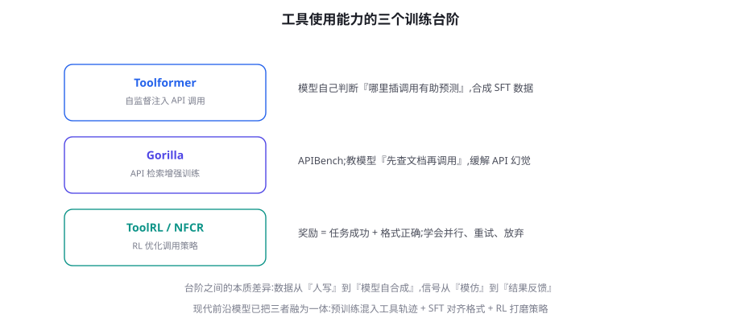

工具使用训练：Toolformer、Gorilla 与 ToolRL
「会调工具」是 Agent 与聊天机器人的分界线。本章沿三个里程碑讲清工具能力的训练史——Toolformer 的自监督注入、Gorilla 的检索增强、ToolRL 的结果优化——并回答应用团队最关心的问题：旗舰模型的工具可靠性是怎么来的，我能不能为自己的工具链定制训练。
三个里程碑：工具能力的三级进化

里程碑一：Toolformer（Schick et al. 2023, arXiv:2302.04761）——「哪里该插工具调用」的自监督发现。它的天才之处是数据自生成：对语料的每个位置，让模型试插入若干 API 调用，只保留「插入后能降低后续 token 预测损失」的调用——即「这个调用确实帮助了预测」的统计证据。用这些自产数据微调，模型学会了「在合适的位置调用合适的 API」。它的启示超越历史：工具调用的「何时调用」可以从纯文本的统计信号中学到——不依赖人工标注的调用时刻。里程碑二：Gorilla（Patil et al. 2023, arXiv:2305.15334）——「调 API 前先查文档」的能力。它的贡献有二：APIBench 基准（测试模型对海量 API 的调用准确性）与「检索感知训练」（训练时加入检索到的 API 文档作为条件，让模型学会「依赖文档而非记忆」——API 幻觉的解药）。它的启示：工具宇宙太大，靠权重记住所有 API 不可能，「会查文档」比「记得多」更根本——这正是今天 MCP 生态「动态工具 + 文档」模式的思想源头。里程碑三：ToolRL/ToolRL 系列（2024-2025）——RLVR 思想进入工具域。把第 43 章的方法用于工具调用：奖励 = 任务是否完成（结果）+ 调用格式与策略（并行、重试、放弃的合理性），GRPO 训练。旗舰模型的工具可靠性飞跃，正是三级台阶的集大成：预训练语料含工具轨迹 + SFT 对齐协议 + RL 打磨策略。
工具调用的四个子能力与训练映射
| 子能力 | 失败形态 | 主要训练来源 | 本章对应 |
|---|---|---|---|
| 时机判断（何时调用） | 不查就答 / 万物皆查 | Toolformer 式统计 + RL 结果反馈 | 44.1 / 44.3 |
| 选择定位（调哪个） | 幻觉工具、选错工具 | SFT 工具描述配对 + 检索增强 | 44.2 |
| 参数构造（怎么调） | 参数幻觉、类型错误 | SFT 协议对齐 + RLVR（Schema 校验） | 44.3 |
| 策略编排（顺序/并行/放弃） | 串行化并行、死磕失败路径 | Agent RL（第 45 章） | 44.4 |
Toolformer 的「插入调用降低预测损失」判据，本质上是在问：「这个工具调用的结果，是否携带着文本本身推不出的信息？」——如果是，知道结果的模型预测后续文本会更准。这个判据的三点妙处：① 零标注成本——「是否有用」由信息论自动裁决，无需人类定义「何时该用工具」；② 抵抗幻觉——「插了白插」的调用（返回无用信息）不降低损失，被自动过滤；③ 可规模化——任何语料都是考场。它的现代回声：2024-2025 年的「工具数据自合成」管线（第 47 章）大量沿用这一思想——用「信息增益」筛工具调用样本。你在自己的领域可以做的同构实验：拿业务语料试插入工具调用，用「下游任务的预测/回答质量提升」筛出「值得调用」的场景清单——这就是你的领域版 Toolformer，也是「何时该调用」数据的最便宜来源。
ToolRL：把第 43 章的 RLVR 搬进工具域
ToolRL 的核心是把验证器从「数学答案比对」换成「工具任务完成度」：给模型一组工具（模拟实现）与一个任务，模型的多步调用轨迹结束后，验证器判定任务是否达成（查到了正确信息、完成了正确操作）。奖励设计的三层结构直接套用第 43 章：结果奖励（任务完成 +1）、格式奖励（调用协议合法 +0.1）、策略奖励（并行调用、及时放弃 +0.05）。GRPO 的组内比较在工具域格外合适：同一任务的多条轨迹天然存在「策略差异」（有人绕远路、有人直达），相对优势的信号丰富。这个范式的产出可以直接回答「旗舰模型工具能力为何飞跃」——预训练给了语感、SFT 给了协议、RL 给了策略。对你团队的启示：如果你的工具环境可以「模拟」（模拟数据库、模拟 API），你就拥有了一个 ToolRL 训练场——第 45 章的环境工程正是把这个思路系统化。
一个「从 Toolformer 到 MCP」的时代注记，作为对工具训练演化史的收束：Toolformer 时代（2023 初）的模型要「自己记住」有限的几个 API——工具是模型的「内置器官」；Gorilla 时代引入检索——工具是「可查阅的外部资料」；MCP 时代（2024 末至今）——工具是「即插即用的外设生态」。三个时代的训练重心随之迁移：记住调用格式 → 学会查阅与遵循文档 → 学会在开放工具生态中「按描述快速上手」。训练的目标从「记住工具」漂移到「元能力：快速掌握新工具」——这个漂移对你有直接含义：为模型选工具时，「文档与描述质量」（模型的学习材料）的权重应该高于「模型是否见过这个工具」（记忆）——前者是可教学的，后者在动态工具时代根本靠不住。
并行调用的训练：一个专门的小节
第 17 章讲过并行调用的工程价值（延迟从求和变取最大），训练侧如何教会模型「该并行时并行」？这是工具训练里一个精巧的小问题，三层解法：① SFT 示范显式并行——示范轨迹中把独立调用写在同一轮（一次 assistant 消息含多个 tool_call），并在思考段说明「这三个查询互不依赖，并行发出」——教会「识别独立性」；② 对比数据强化——DPO 对：chosen 为并行版轨迹、rejected 为同内容的串行版（结果相同、效率不同）——「结果对但笨拙」的负样本教会效率意识；③ 评测护栏——评测集中专设「应该并行的场景」，串行化即扣分。三层合用的效果在 BFCL 的多调用子集上有直接体现（并行场景的得分是区分模型代际的指标之一）。这个案例的元教训：「效率也是可以被训练的品质」——只要你能构造出「结果相同、路径不同」的对比数据，任何过程品质（并行、简洁、先检索后答）都可以用 DPO 教。
收束本章的「一页带走」：工具能力的训练史是「数据自产（Toolformer）→ 学会查文档（Gorilla）→ 结果反馈打磨（ToolRL）」的三级进化，今天的旗舰模型是三级合流的产物。对应用团队，本章给出的行动清单是：① 用四子能力框架诊断你的工具问题；② 构建领域工具评测集（三层评分）；③ 数据配方四件套按需补齐（正确示范/克制示范/失败修正对/RL）；④ 并行、简洁等过程品质可用对比数据教。工具训练的哲学与全书一致：先评测定位（哪一层弱）、再按数据可得性选手段（SFT→DPO→RL）、分布对齐贯穿始终。下一章我们把镜头从「单个调用」拉远到「整个任务」——Agent RL 的环境工程，是把你的业务变成训练场的完整方法论。
再补一个「领域数据从零到一」的速成配方，回应最常见的实操问题「我没有调用日志，冷启动怎么办」：四步冷启动法——① 工具清单 + 场景清单交叉造题（每个「场景 × 工具组合」写 3~5 个任务，人工 1~2 天可造 200~500 题）；② 强模型生成候选轨迹（把任务与工具 Schema 给强模型，让它多路采样调用轨迹）；③ 环境校验过滤（在模拟环境中执行候选轨迹，成功的留下、失败的标注错误类型）；④ 人工抽检 10%（重点抽「边界场景」与「多步轨迹」）。两三天得到 500~1000 条经过校验的轨迹——足够支撑第一轮 SFT。冷启动之后，生产日志会接管数据供给（第 47 章的飞轮接管）。这套配方的每一环都是前面章节的既有知识：造题是第 47 章、强模型生成是蒸馏、环境校验是第 43 章的验证器、抽检是第 22 章的质检——工具训练的数据冷启动，不过是旧知识的重新组装。
工具训练的专用范式：NFCR 与「负样本的教益」
第 17 章讲过工具失败要「可行动」，训练侧的对应物是负样本的利用。Toolformer 后的一个重要方向（如 Nemotron-Tool-Retrieval 系列与各厂商内部实践）是把「不该调用的场景」也纳入训练：示范数据里混入「不调用直接回答」的正确样本——模型才能学会「简单问题不查库」。更进一步，失败轨迹的成对构造（错误调用 vs 修正后调用）作为 DPO 数据（第 41 章轨迹级 DPO），教会模型「识别自己的调用错误」。工具训练的数据配方由此成型：正确调用示范（SFT 主粮）+ 不调用示范（克制）+ 失败-修正对（DPO 精修）+ RL 结果反馈（实战化）——四种数据对应四个子能力，缺哪补哪。
为工具调用构造训练数据时，三种偏置会悄悄毁掉泛化：① 工具名巧合偏置——训练集里「get_weather 的调用都对应天气问题」，模型学到的是「按名字匹配」而非「按语义匹配」——遇到 get_climate 就懵。对策：工具描述与名字「解耦训练」（同功能不同名的工具混入）。② 成功偏置——示范全是「一次调用成功」的短轨迹，模型学不会「先查 schema 再调用」「失败后修正」。对策：刻意混入多轮与失败恢复轨迹（本章 44.4 与第 39 章轨迹构造呼应）。③ 参数分布偏置——训练数据的参数值都是「规整」的（干净的 ID、标准格式日期），真实世界的参数是「脏」的（带空格的 ID、多种日期格式）。对策：参数值做「脏化增广」（加空格、变格式、大小写混合）。三种偏置的共同解药是「分布对齐」纪律：训练数据的每一种分布（工具名、轨迹形态、参数值），都要主动去贴近真实流量——与第 39 章的分布对齐要点一脉相承，只是工具域的偏置形态更隐蔽。
给你的工具链做训练适配：一张决策卡
应用团队的落地视角：旗舰模型的通用工具能力已经很强，什么时候才需要「为你的工具链做训练」？决策卡三问：① 你的工具是否「非标」？——自定义程度高的内部系统（特殊协议、领域黑话参数）超出通用模型的分布 → 值得训练（或至少 SFT）；② 你的调用模式是否「特别」？——行业特有的调用惯例（金融的合规核查链、医疗的隐私过滤步骤）通用数据没有 → 值得训练；③ 错误成本是否极高？——错一次调用损失巨大（生产操作、资金动作）→ 用领域数据 + DPO/RL 收紧行为。三问都是「否」→ 通用模型 + 好的工具描述（第 17 章）+ 好的验证（评测）就是最优解——训练是工具工程的重武器，先确认轻武器真的不够用（与第 38 章的训练时机框架一脉相承）。
三个高频疑问
Q：评测我的模型「会不会用我的工具」，怎么做？构造一个「工具调用评测集」的最小方案（第 54 章 BFCL 的微缩版）：30~100 个任务，每个任务包含「工具清单（Schema）+ 用户请求 + 期望的调用序列」。期望序列分四类各占一定比例：直接回答（不该调用）、单调用、多调用（顺序/并行）、错误处理（工具会失败，期望模型换路）。评分三层：选择正确（调了该调的）、参数正确（值对格式对）、序列正确（顺序与并行合理）。这个评测集同时服务三个用途：模型选型（哪家基座工具能力好）、提示词迭代（工具描述改动的回归测试）、训练决策（三层指标系统性低 → 该训练了）。
Q：SFT、DPO、RL 三种手段在工具域怎么排优先级？按「数据可得性」排：先 SFT——正确调用轨迹相对好造（手写模板 + 参数增广，第 39 章轨迹构造），解决「格式与基本选择」；再 DPO——从生产日志挖失败-修正对（工具报错后的正确重试），精修「错误处理与边界」；最后 RL——环境可模拟时（第 45 章），上结果奖励做实战化。预算紧张时只做 SFT + 好评测就能解决 70% 的工具问题——「工具描述 + SFT + 评测」是工具工程的三件套，RL 是第四件奢侈品。
Q：MCP 时代，工具训练会变了吗？会「更聚焦」：MCP 让工具的「协议层」（Schema、传输、发现）标准化——这部分能力通用模型会越来越好（预训练与旗舰 RL 大量覆盖）；而「语义层」（你的工具干什么、何时用、参数的领域含义）始终需要你的定制——工具描述的写作（第 17 章）、领域调用的示范（本章 SFT）、行业调用惯例的强化。协议标准化把训练的需求从「全栈」压缩到「语义」——训练预算可以更聚焦，这是 MCP 对训练侧的真实红利。
本章（训练工具能力）与第 54 章（评测工具能力）是一对镜子。分工表：第 54 章的 BFCL 等基准测「通用工具能力」（跨领域的调用准确率——选型用）；本章关心的「你的工具链的能力」（领域调用可靠性——迭代用）。两者的评测方法学完全一致（三层评分：选择/参数/序列），只是考题不同——通用考题测基线，领域考题测目标。读完本章先去第 54 章把「评测集构造」学了，再回来做本章的领域评测集——顺序反了的团队常犯「用通用榜单替代领域评测」的错误（榜单高低与你工具链的表现相关性有限，第 50 章）。
数字感补充（工具域训练的资源量级）：工具调用 SFT（1 万条轨迹，7B LoRA）单卡一天内；轨迹级 DPO（5000 对）半天；ToolRL 式 GRPO（需要模拟环境，1 万任务 × G=8 轨迹）单机多卡数天——工具域的训练成本与第 39/41/43 章的量级一致，特殊开销在「环境的模拟实现」（把你的 API 做成可控的模拟版，可能 1~2 人周）。再一次：瓶颈在数据与环境，不在算力。
不用训练也能做一个「Toolformer 式分析」：从你的生产日志里抽出 100 条「模型调用了工具」的会话，对每条问 Toolformer 的问题——「如果删掉这次工具调用，最终回答的质量会下降吗？」人工判定后统计：多少比例的调用是「必要」（删了答案变差）、多少是「仪式性」（删了无影响）、多少是「有害」（删了反而对）。这个分布就是你的「调用时机」健康度——仪式性比例高说明模型过度调用（提示词/训练可改），有害比例高说明时机判断有系统性缺陷。一小时的日志分析，换来对「该不该训练」的量化依据——这比任何直觉都可靠。
最后一个关于「工具能力与安全的交叉提醒」（预连接第 6 部分）：训练能提升工具调用的「正确性」，但不能替代「调用权限的治理」——一个被训练得「调用更准」的模型，如果拥有过大的工具权限，准确的下毒手依然是下毒手。第 59 章会讲「模型能力与模型权限是两条独立的防线」：训练提升前者，权限系统约束后者，两者不能互相顶替。在规划工具训练项目时，请把「权限最小化」放在「训练增强」之前——先确保它只能做该做的事，再教它把事做好。
最后一段留给一个容易被忽略的「负空间」观察：工具训练的文献极少讨论「什么时候不该调用工具」的长期后果——一个被训练成「永不调用」的模型在需要时会错过信息，一个被训练成「调用狂」的模型在不需要时浪费成本并引入风险。这个「调用阈值」没有普适答案，它应该由你的业务成本结构决定（调用成本 vs 出错成本），并且应该随信息环境变化而再训练——模型的知识截止后，「查一下」的价值上升；知识库更新后，「先查再答」的期望收益又变化。调用阈值是个动态参数，不是一次性训练的决定——把它加入你的季度回顾清单，与工具成本、模型知识截止日期一起审视。这是工具训练区别于其他训练维度的独特之处：它的最优解随时间漂移。
最后一遍点题：本章与第 43 章的关系是「同一把刀（RLVR）在不同战场（工具域 vs 推理域）的用法」；与第 45 章的关系是「单步调用 vs 整个任务」——单步的验证器是 Schema 与结果，整个任务的验证器是环境终态。你现在已经握有从「一次调用」到「一场任务」的完整训练视角。第 45 章，我们深入 Agent RL 的主战场：环境工程、课程设计、失败轨迹的炼金术——这是让 Agent 从「会用工具」到「能扛任务」的最后一跃。
本章在全书网络中的连接：上游是第 17 章（工具设计——训练数据的质量源头）、第 39 章（SFT 轨迹构造）、第 41 章（轨迹级 DPO）、第 43 章（RLVR 与 GRPO）；下游通向第 45 章（Agent RL 的环境与课程）、第 54 章（工具评测基准）、第 56 章（评测的 CI 化）。工具训练是「机制 × 工程 × 数据」三线的交汇点——它也最典型地展示了本书的教学主张：先懂机制（第 43 章的 RLVR）、再看工程（本章的配方）、最后落到你自己的数据（第 47 章）。复习本章时，把三张表（四子能力、数据四件套、决策卡）作为记忆锚点。
关于「工具幻觉」的专项补充（它是选择子能力失败的最常见形态），训练侧与工程侧的对策矩阵：训练侧——SFT 数据里加入「不存在的工具被询问」的正确示范（回答「我没有这个工具，可用的是 X/Y」）；DPO 对（幻觉调用 vs 拒答并给出可用清单）。工程侧——工具清单的稳定注入（不要截断）、调用前的注册表校验（第 17 章）、以及「幻觉率」的专项评测指标。两侧的分工：训练降低「发生率」，工程保证「零穿透」（发生也拦得住）——与第 22 章「先校验后反思」的排序哲学一致：工程护栏是底线，训练是长期治理。
动手：构建一个领域工具评测集
训练要闭环，评测先行。本章给出一个可以直接落地的「领域工具评测集」构建流程——它同时服务于训练（作为 RLVR 的验证集）与上线（作为回归测试）。以「内部运维域」为例，目标是评测模型对这个域内 40 个工具的掌握程度。
第一步：工具画像。对每个工具登记四元组（名称、参数 schema、前置条件、幂等性）。幂等性尤其重要——它决定了该工具能否安全地出现在「重试类」评测轨迹里。非幂等工具（如「重启实例」）只允许出现在显式确认语境中。
第二步：任务分层。按四个子能力各出 15 题，共 60 题，难度按 3:5:2 配比（易：中：难）。难题必须包含至少一个「陷阱」：工具清单里没有能直接完成任务的工具（考察拒答）、参数需要从上一轮结果推断（考察链式）、或任务描述与工具描述存在措辞冲突（考察消歧）。
- id: ops-017
capability: chain_call # decide | ground | chain | handle
difficulty: hard
tools_visible: [list_instances, restart_instance, get_logs]
task: "web-3 实例磁盘告警，定位原因并处理"
grader:
type: trajectory # 结果判定 or 轨迹判定
must_include: [get_logs]
must_not_include: [restart_instance] # 日志显示是日志占满，重启无效
max_steps: 6
trap: "告警词是 disk，但根因是日志未轮转，正确动作是清理而非重启"第三步：判分器实现。结果判定（final answer 对不对）用字符串/规则匹配；轨迹判定（过程对不对）用「必含动作 + 禁含动作 + 步数上限」的三元约束——比「逐 token 对齐参考轨迹」稳健得多，也更接近真实验收标准。第 46 章的 PRM 思想在这里萌芽：如果预算允许，把「必含动作」升级为对每个中间步骤的检查点。
第四步：防污染隔离。评测集的工具描述、参数命名要刻意区别于训练数据（换前缀、换别名词汇表），并保留一个「影子域」——10 个训练中从未出现的工具，专门测泛化。影子域得分与主域得分的差值，就是「背题程度」的直接度量。
评测集按用途拆成三份：训练验证集（每轮 RL 跑，可以频繁看）、发布验收集（只在候选模型上跑，防止「验证集过拟合」）、影子回归集（线上流量回放，上线前最后一道闸）。三份分离是 LLM 时代最容易省略、也最容易翻车的纪律——省下的时间会在第 54 章的线上回归里加倍偿还。
这套流程的产出物有两个：一个可复跑的评测包（题目 + 判分器 + 沙箱环境），和一张四子能力雷达图。前者进 CI（第 54 章），后者进模型卡——它们共同把「工具能力」从一句形容词变成一组可审计的数字。
最后一个值得单独成段的观察，是关于「数据配方」与第 39 章 SFT 配方的衔接。工具数据在 SFT 语料中的占比建议控制在 8%～15%：低于 8%，模型在多轮工具调用里的格式稳定性不足（表现为主观问答强、一进工具循环就掉格式）；高于 15%，会挤占推理与写作数据，导致工具调用正确但回答质量下降。这个区间是多个开源模型训练报告反复出现的经验值，不是定理——真正的校准方法是用第 50 章的评测基线做消融：固定其他配比，扫描工具数据占比，画出「工具分 vs 通用分」的交换曲线，在曲线上选拐点。另外，工具数据的轮次分布也有讲究：单轮调用、两三轮链式、十轮以上的长程任务，建议保持 5:3:2——绝大多数生产场景的调用深度在 3 轮以内，但长程能力决定了模型在复杂任务里的「续航」，少了它的模型在长任务里会提前放弃或开始编造结果。
本章小结
- 三里程碑：Toolformer（自监督发现调用时机）、Gorilla（检索增强、APIBench）、ToolRL（结果反馈优化）。
- 四子能力映射：时机、选择、参数、策略——各有不同的训练来源与失败形态。
- Gorilla 的遗产：「会查文档」比「记得多」根本——动态工具时代的底层能力。
- 数据配方四件套：正确示范、不调用示范、失败-修正对、RL 结果反馈。
自测题
- 你的模型经常「明明知道答案还要查一遍数据库」（过度调用）——这是哪个子能力的问题？训练侧与工程侧各有什么解？
- 为什么「检索增强训练」比「把 API 文档全塞进上下文」更根本？用 Gorilla 的思想回答。
- 为你的业务工具链设计「失败-修正对」：挑三类高频调用错误，各写一对（错误轨迹 → 修正轨迹）。
- Toolformer 的「插入调用降低预测损失」判据，在你的领域有什么有趣的对应物？
参考文献与延伸阅读
- Schick, T. et al. (2023). Toolformer: Language Models Can Teach Themselves to Use Tools. arXiv:2302.04761
- Patil, S. et al. (2023). Gorilla: Large Language Model Connected with Massive APIs. arXiv:2305.15334
- Qian, C. et al. (2024). ToolRL: Reward is All Tool Learning Needs. arXiv:2504.13958
- Su, J. et al. (2024). Nemotron-Tool-N1 等工具 RL 系列.（2024-2025 工具 RL 的代表工作群）
- Berkeley Function Calling Leaderboard. gorilla.cs.berkeley.edu（工具调用能力的权威榜单，评测细节见第 54 章）